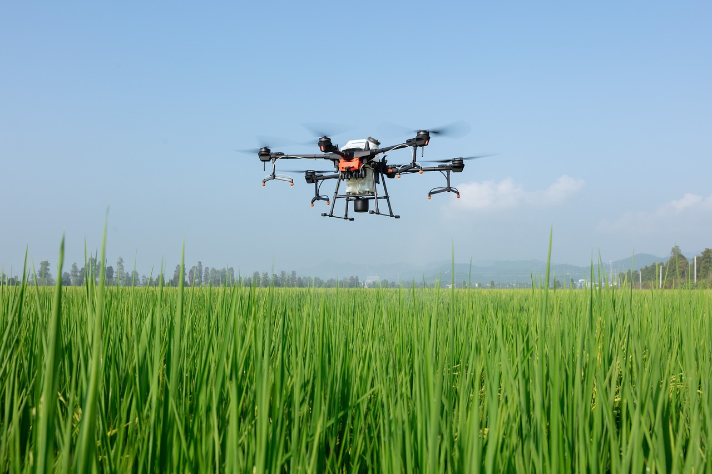
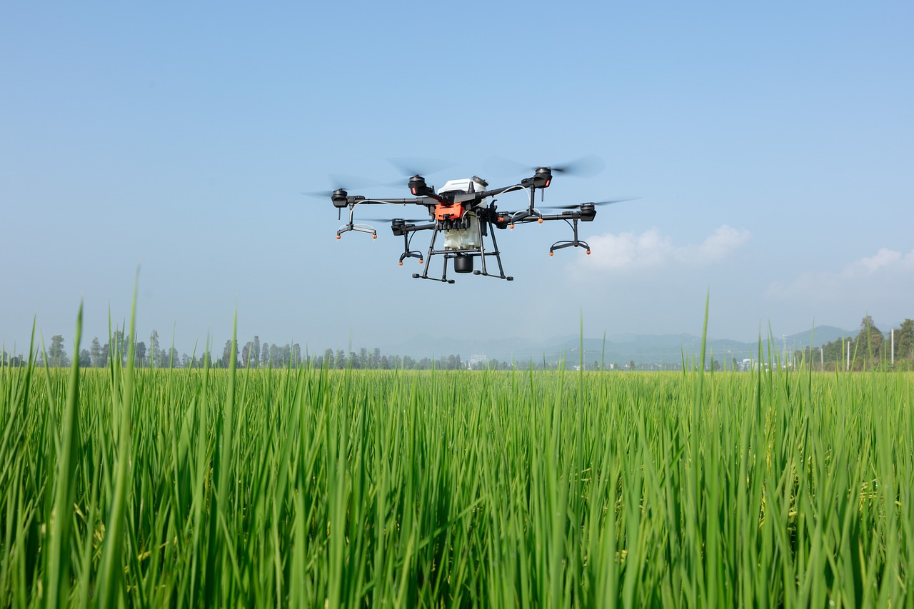

Drones na Agricultura
O uso de drones na agricultura traz diversas vantagens, como a economia de tempo para cobrir grandes áreas rapidamente e fornecer dados precisos sobre o estado das plantações. Sua demarcação possibilita a otimização do uso do solo, evitando o desperdício e maximizando a eficiência.
Durante o desenvolvimento das safras, os drones são utilizados para monitorar o crescimento da soja, podendo detectar anomalias que afetam a produtividade, garantindo um manejo eficiente. Essa tecnologia ajuda os agricultores a prever e planejar melhor a colheita.
 
